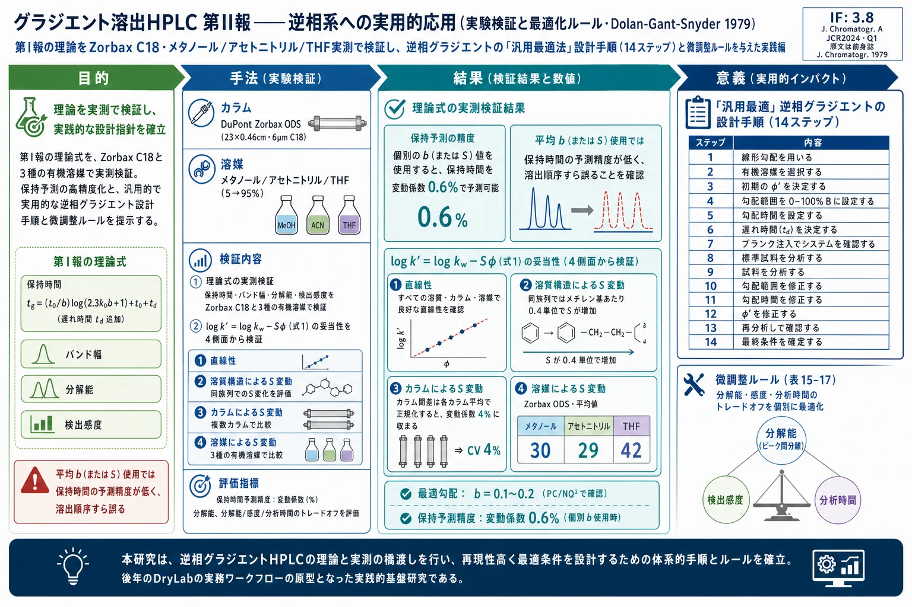

グラジエント溶出HPLC 第II報――逆相系への実用的応用（実験検証と最適化ルール・Dolan-Gant-Snyder 1979）

<!-- Dolan JW, Gant JR, Snyder LR. Gradient elution in high-performance liquid chromatography. II. Practical application to reversed-phase systems. Journal of Chromatography, 165 (1979) 31–58. doi:10.1016/S0021-9673(00)85727-1 の全訳密度日本語版。原文はスキャンPDFのため、本文はページ画像とOCRを併用して再構成した。 数値・表は画像で確認して転記。判読不能箇所は「原文参照」と明記。第I報（Part I）は gradient-elution-hplc-1-theoretical-basis-reversed-phase を参照。 -->
補足（本サイトでの位置づけ）: 本論文は第I報（[グラジエント溶出HPLC 第I報――逆相系の理論的基礎](gradient-elution-hplc-1-theoretical-basis-reversed-phase.html)）の実践編である。第I報が「グラジエントをイソクラティックの言葉で理解する」理論（LSS理論・1/b↔k'の対応）を打ち立てたのに対し、本報はそれを実際のC18カラムと3種の溶媒で実験検証し、さらに「では現場でどう最適なグラジエントを組むか」という具体的手順（14ステップの設計フロー・微調整ルール）に落とし込む。ここで示された「1回の予備グラジエントから溶質のb・S値を求め、保持や最適イソクラティック条件を予測する」ワークフローは、後年 Snyder・Dolan が商用化した DryLab（2本の予備runから最適条件を計算するソフト）の直接の原型である。生薬・漢方の多成分（極性の大きく異なる配糖体・フラボノイド・アルカロイド等）を1回のグラジエントで分離・指紋分析する際の、溶媒選択・勾配率・分析時間短縮の実務判断がすべてここに揃っている。IFについて: 原文誌 Journal of Chromatography（1979）は現 Journal of Chromatography A の前身。現行誌IFは 3.8（JCR2024・Q1）。1979年当時の値ではない（要確認）。
書誌情報
- 原題: Gradient Elution in High-Performance Liquid Chromatography. II. Practical Application to Reversed-Phase Systems
- 和題（本稿）: グラジエント溶出HPLC 第II報――逆相系への実用的応用
- 著者: J. W. Dolan（John W. Dolan）, J. R. Gant, L. R. Snyder（Lloyd R. Snyder）
- 所属: Technicon Instrument Corp., Tarrytown, N.Y. 10591, U.S.A.
- 掲載誌: Journal of Chromatography, 165 (1979) 31–58（Chromatographic Reviews、CHREV. 117）
- DOI: 10.1016/S0021-9673(00)85727-1
- © 1979 Elsevier Scientific Publishing Company, Amsterdam
- 論文種別: 実験検証＋実用ガイド論文（第I報 [ref.1] の理論を実測で検証）
本稿の作成方針: 原文はスキャンPDF。全28ページのページ画像とOCRテキストを併用して本文・数式・表を再構成した。数値は表画像で確認して転記している。判読不能箇所は「原文参照」と明記し、原文に無い数値・結論は加えていない。第I報で導入された式・表・図の番号には原文でアスタリスク（）が付く（例：式3a、式14、表4、図5*）。本稿では「（第I報 式14）」のように示す。
目次（原文 CONTENTS）
- はじめに
- 実験（A. 装置 / B. 試薬 / C. 手順：a. イソクラティック、b. グラジエント）
- イソクラティック逆相LCにおける溶媒効果
- A. log k' 対 φb の直線性 / B. 溶質構造によるSの変動 / C. 異なる逆相充填剤間のSの変動 / D. 異なる有機溶媒BによるSの変動
- LSS-GEにおける保持・バンド幅・分解能
- A. 保持時間 / B. 初期移動相濃度 / C. バンド幅 / D. 分解能 / E. 検出感度 / F. 分離選択性
- その他の考察（A. イソクラティック分離の設計 / B. GEでのカラム理論段数の計算 / C. まとめ）
- 逆相グラジエント溶出への理論の実地応用：初期分離（A. 装置パラメータ / B. 移動相の特性 / C. 試料の分析 / D. カラム再生）
- 「微調整（ファインチューニング）」（A. 分解能の改善 / B. 検出感度 / C. 分析時間の最小化）
- 記号一覧 / 9. 付録I：イソクラティックとグラジエント溶出の最適 k'・b / 10. まとめ / 引用文献
1. はじめに
第I報 [ref.1] では、逆相系と高速液体クロマトグラフィー（LC）に重点を置いた、グラジエント溶出分離の実用理論を提示した。本論文ではこの逆相グラジエント溶出（RP-GE）LCの検討を続ける。ここでは3つの領域に焦点を当てる：(1) 逆相LCにおけるイソクラティック容量因子（k'）値と移動相組成の関係の性質、(2) 理論研究 [ref.1] で到達した種々の結論の実験的検証、(3) RP-GE応用で種々の目標を達成するための好ましい分離条件の実用的まとめ。
2. 実験
A. 装置
LCシステムは Waters Model 6000A LCポンプ2台と Model 660 溶媒プログラマー（Waters Assoc., Milford, Mass., U.S.A.）で構成。試料は 10 µL サンプルループ付き注入バルブ（Model 7120, Rheodyne, Berkeley, Calif.）で注入。注入バルブとカラムの間に 2.0 µm プレフィルター（Model 7302, Rheodyne）を設置。特記なき限り、分離は室温で 23×0.46 cm・6 µm C18充填（Zorbax ODS, DuPont, Wilmington, Del.）カラムを用いて行った。検出はDuPont Model 901 254 nm 固定波長検出器、記録は Model 2000 レコーダー（Houston Instruments, Austin, Texas）。
表3の研究には追加カラムを使用：Merck C8（25×0.46 cm、10 µm）、Waters C18（30×0.39 cm、10 µm）、Hypersil C18（16×0.5 cm、5–7 µm、Shandon Southern）、DuPont C18（23×0.46 cm、6 µm；1本はオクタデシルジメチルクロロシラン、1本はオクタデシルトリクロロシランで調製）、DuPont C8（23×0.46 cm、6 µm）。
B. 試薬
移動相はHPLCグレードのメタノール（MeOH）、アセトニトリル（AN）、テトラヒドロフラン（THF）（Burdick & Jackson）を、Milli-Q装置（Millipore）の高純度水と混合。グラジエント溶出では、有機-水移動相を初期溶媒Aは5%有機-95%水、最終溶媒Bは95%有機-5%水に混合した。この事前混合とヘリウムスパージにより、グラジエント形成時の溶媒脱ガスを排除した。したがって「0–100%グラジエント」は実際には5–95%有機である（本論文では実際の移動相組成で表記）。
C. 手順
(a) イソクラティック: イソクラティックデータは、グラジエント形成器で混合するか、log k' 対 φ データについてはグラジエント装置とは独立に精密組成の移動相を混合し、1台のポンプをイソクラティックモードで使用（グラジエントシステム由来のバイアス排除）。
(b) グラジエント: 全グラジエントは特記なき限り 20分で0–100%B。b値は移動相流量を便利な刻み（0.5–1.0 mL/分）で変えて変化させた。グラジエントrun後、カラムは 2.0 mL/分で10分の逆グラジエント＋初期移動相条件で少なくとも10分のイソクラティック運転により初期条件に再生。全分離は二重に実施。
3. イソクラティック逆相LCにおける溶媒効果
第I報 [ref.1] で簡潔にレビューしたとおり、逆相系の溶質 k' 値は一次近似で一般式で表せる：
$$\log k' = \log k_w - S\,\phi_b \tag{1}$$
ここで、所与の試料成分（溶質）Xと所与の有機溶媒B（例：メタノール）について、k' は水-有機移動相中のBの体積分率 φb でのイソクラティック容量因子。k_w は φb=0 での外挿 k' 値（式1が 0≤φb≤1 で厳密に成り立てば、純水移動相での化合物Xの k' 値）。溶媒強度パラメータ S は有機溶媒Bで決まる（例：メタノールで S≈3、THFで S≈4）。Sは所与の有機溶媒Bでも異なる逆相カラムでいくらか変化する。第I報では、大半の試料でSが溶質分子構造とともに有意には変化しないと仮定したが、同族列や特定のオリゴマーではSが溶質分子量とともに増加することに注意した。
式1の妥当性は、(1) 第I報のRP-GE一般論、(2) 本報の実験検証、(3) 本報末尾の実用的まとめ、の基礎となる。式1は逆相系の信頼できる一次近似として深刻な留保なしに受け入れられる。それでもこの関係をさらに検討する価値が2つある：第一に式1のRP-GE解釈への疑問を払拭するため、第二に二次的効果（式1からのずれ、溶質構造によるS変動など）の重要性を特殊ケースで洞察するため。式1の妥当性には4つの論点がある：(1) 逆相系での log k' 対 φb プロットの直線性からのずれ、(2) 溶質構造変化に伴うSの変動、(3) 異なる逆相充填剤によるSの変動、(4) 異なる溶媒BによるSの変動。
A. log k' 対 φb の直線性
第I報でレビューしたとおり、大半の先行研究は逆相系で log k' 対 φb の本質的に直線のプロットを示している。少数の研究、特に φb=1 付近で曲率を示唆する。最も詳細なのは Schoenmakers ら [ref.2] の研究で、多数の溶質と3種の有機溶媒B（メタノール・エタノール・プロパノール）のデータをまとめた。彼らは log k' 対 φb プロットが二次式でよりよく表せると見出した：
$$\log k' = A\,\phi_b^2 + B\,\phi_b + C \tag{2}$$
Schoenmakers ら [ref.2] の各溶質のデータをメタノール・プロパノールについて平均すると、図1の log k' 対 φb プロットが得られる。プロパノールのデータは φb≈0.9 の領域で k' に明確な極小を示す。式2に従って φb=1 を超えて外挿すると（破線）、メタノールでも（φb≈1.4 で）k' の極小が生じる。
図1（原文 Fig. 1）: n-プロパノールとメタノールを有機溶媒Bとする log k' 対 φb の変動（ref.2の平均データ）。n-プロパノール：式2で A=2.42, B=−4.19, C=1.50。メタノール：A=1.88, B=−5.24, C=3.06。
第I報で、RP-GE分離でのバンド移動は主に k'が2〜10の間の時間（または移動相組成）に起こると指摘した。図1でこの領域の log k' プロット（細い破線）は実験プロット（太線）とほとんど違わない。特にプロパノール（および他の低極性溶媒）で φb≈0.9 付近に見られる k' の極小は、RP-GE分離では実用的意義がほとんどない。
k'>1 では、log k' 対 φb プロットの有意な非直線性が起こるかは自明でない。限られた数のデータ点では、1点以上の小誤差が容易に曲率を示唆しうる（実際には曲率が無くても）。Schoenmakers ら [ref.2] の研究がある程度これに当てはまることは、彼らのデータが同一溶質で C（純水移動相の k'）に最大1.74単位（k'にして55倍）もの差を示すことから示唆される。
式1・2のよりよい検証は、異なる溶質の log k' 対 φb プロットを重ね合わせることで得られる。これらを水平方向にずらして大まかに一致させ、生じたプロットの曲率を調べる。図2は、我々が調べた水(A)-メタノール(B)系（表1のデータ）の例。これらのデータを通る直線は曲率がないことを示唆する（実験誤差内）。ref.2の平均プロット（式2ベース）を破線で重ねると、2つのプロットの類似は明らかだが、ref.2で指摘されたわずかな曲率は同じ逆相系の我々自身のデータには見られない。
表1（原文 TABLE 1）：DuPont Zorbax-ODSカラムでの異なるメタノール-水混合物中のイソクラティック k' 値
| 溶質 | (シフト) | 70%MeOH | 60%MeOH | 50%MeOH | 45%MeOH |
|---|---|---|---|---|---|
| フェノール | (0.175) | 0.71 | 1.38 | 1.94 | — |
| p-ニトロフェノール | (0.136) | 0.72 | 1.97 | 2.86 | — |
（括弧内の数字は図2でのプロットの φb シフト量。例：フェノール（0.175）は φb=0.775, 0.675, 0.625 でプロット。）
log k' 対 φb プロットが一部の逆相系で実際に曲線的でも（例：ref.2）、その非直線性のRP-GE分離への影響は小さい（第I報 付録V参照）。式1の妥当性、特に log k' 対 φb プロットの直線性については、さらなる研究が必要である。k'データ収集時には次の実験的配慮を重視すべき：(a) データ収集前のカラムと移動相の完全平衡化、(b) k'が溶質濃度の関数でないことの確認（特に k'>5）、(c) データ収集中のカラム・流入移動相の温度一定、(d) シリカ表面が結合相で完全被覆された充填剤の使用、(e) t0の誤差とその k' 値への影響の評価。
B. 溶質構造によるSの変動
溶質分子構造へのS依存を扱った研究は少ない。Schoenmakers ら [ref.2] は17溶質を調べ、そのS値（メタノール）を表2に示す。我々が複数カラム・多数溶質で調べた平均S値も表2にまとめた。これらのデータから溶質構造とSの明白な相関は現れない。さらに、これら代表的溶質では、所与のカラム（と有機溶媒B）でのSの平均変動はわずか 10〜20% 程度である。すなわち典型的試料では、成分間のS変動はほとんど期待されない。
同族列の溶質では状況がやや異なる。Tanaka & Thornton [ref.3] の研究から導いたS値を種々の同族列（メタノール-水）について図3にプロット。溶質のアルキル炭素数nへの強い依存が明瞭。異なる同族列のプロットの傾きはほぼ一定（メチレン基あたり0.4単位）。図3をn=0に外挿すると、n-アルカン・アルキルベンゼン列で、溶質分子へのフェニル基の付加はSを約0.8単位増やす（芳香族炭素あたり0.1単位で、脂肪族炭素あたり0.4単位よりずっと小さい）。
表2（原文 TABLE 2）：溶質構造の関数としてのS値（メタノール-水、室温）
| 溶質 | S（ref.2）* | S（表3データ）** |
|---|---|---|
| フェノール | 1.7 | 2.6 |
| アセトフェノン | 2.0 | 3.2 |
| ベンゼン | 2.1 | 2.7 |
| トルエン | 2.6 | 3.4 |
| エチルベンゼン | 3.2 | — |
| フタル酸ジエチル | 2.6 | — |
| フタル酸ジブチル | 4.0 | — |
| ベンゾフェノン | 2.7 | — |
| アニリン | 1.8 | — |
| N-メチルアニリン | 2.2 | — |
| N,N-ジメチルアニリン | 2.4 | — |
| キノリン | 2.2 | — |
| ベンジルアルコール | 1.8 | — |
| 2,4-キシレノール | 2.3 | — |
| 2-クレゾール | 2.1 | — |
| 3-クレゾール | 2.1 | — |
| ベンズアルデヒド | 2.9 | — |
| ニトロベンゼン | 2.9 | — |
| 安息香酸メチル | 3.6 | — |
| アニソール | 3.0 | — |
| フルオロベンゼン | 3.0 | — |
| 平均 | 2.4 ± 0.6 | 3.0 ± 0.3 |
\ ref.2から k'=1.4 で計算。\\* 平均値（表3より）。
C. 異なる逆相充填剤間のSの変動
異なる逆相充填剤（とカラム）間のS値の変動については既に懸念を表明した。表3は9溶質×5カラムで我々が収集したデータ。表3のSの絶対値は、所与の溶質で5カラム間の変動が、所与のカラムで9溶質間の変動と同程度に大きい。しかしカラムの影響は、各S値をそのカラムの平均Sで割って正規化すれば補正できる。正規化S値は所与の溶質で5カラム間で比較的一定に保たれた（Sの平均変動係数=4%）。
表3（原文 TABLE 3）：5つの異なる逆相カラムでの選択溶質のS値（水-メタノール、室温）
| 溶質 | Waters C18* | Shandon C18** | DuPont C18*** | DuPont C8† | 相対S値†† |
|---|---|---|---|---|---|
| フェノール | 2.21 | 2.52 | 2.35, 2.97 | 3.13 | 0.87 ± 0.06 |
| ベンズアルデヒド | 2.52 | 2.72 | 2.92, 3.07 | 3.08 | 0.95 ± 0.03 |
| アセトフェノン | 2.82 | 3.04 | 3.08, 3.63 | 3.39 | 1.06 ± 0.03 |
| ニトロベンゼン | 2.61 | 2.75 | 2.79, 3.18 | 3.16 | 0.96 ± 0.01 |
| 安息香酸メチル | 3.17 | 3.46 | 3.44, 3.82 | 3.78 | 1.18 ± 0.02 |
| アニソール | 2.61 | 2.93 | 2.90, 3.29 | 3.25 | 1.00 ± 0.01 |
| フルオロベンゼン | 2.70 | 3.07 | 2.90, 3.27 | 3.28 | 1.01 ± 0.02 |
| ベンゼン | 2.32 | 2.66 | 2.55, 2.94 | 3.02 | 0.90 ± 0.02 |
| トルエン | 2.90 | 3.23 | 3.13, 3.52 | 3.56 | 1.13 ± 0.06 |
| 平均 | 2.65 | 2.94 | 2.90, 3.29 | 3.29 | (1.00) |
\ モノクロロシラン＋追加シリル化（キャッピング）。\\ トリクロロシラン＋追加シリル化。\\\ トリクロロシラン（1本目）、モノクロロシラン（2本目）、追加シリル化なし。† モノクロロシラン、追加シリル化なし。†† 全カラムに対する所与溶質の平均相対S値。
D. 異なる有機溶媒BによるSの変動
表4・5は、2つの追加二元混合物（アセトニトリル-水、THF-水）のイソクラティック k' 値とS値。THFで全般的にSが増加、アセトニトリルで減少する以外は、表1のメタノールデータと同じパターン。溶質構造へのS依存の理解には大きく寄与しない。
表4（原文 TABLE 4）：Zorbax-ODSカラムでの異なるTHF-水混合物中のイソクラティック k' 値（室温）
| 溶質 | 55%THF | 50%THF | 45%THF | 40%THF | S |
|---|---|---|---|---|---|
| フェノール | — | — | 0.79 | 1.27 | 4.1 |
| p-ニトロフェノール | — | — | 0.99 | 1.80 | 5.2 |
| p-クレゾール | — | — | 1.00 | 1.76 | 4.9 |
| 2,5-キシレノール | 0.69 | 1.05 | 1.55 | 2.79 | 4.0 |
| 安息香酸メチル | 0.76 | 0.93 | 1.31 | 2.11 | 3.0 |
| アニソール | 0.92 | 1.35 | 1.57 | 3.09 | 3.4 |
| ベンゼン | 1.17 | 1.76 | 2.41 | 4.00 | 3.5 |
| フェネトール | 1.17 | 1.80 | 2.61 | 4.69 | 3.9 |
| トルエン | 1.49 | 2.33 | 3.39 | 6.05 | 4.0 |
| 安息香酸ブチル | — | 1.45 | 2.53 | 3.54 | 4.2 |
| アントラセン | — | 1.65 | 2.57 | 4.76 | 4.6 |
| ベンズアントラセン | — | 1.57 | 3.49 | 6.19 | 5.2 |
| 平均 | 4.2 ± 0.6 |
表5（原文 TABLE 5）：Zorbax-ODSカラムでの異なるアセトニトリル-水混合物中のイソクラティック k' 値（室温）
| 溶質 | 70%AN | 60%AN | 50%AN | S |
|---|---|---|---|---|
| p-ニトロフェノール | 0.61 | 1.39 | 4.12 | 3.6 |
| フェノール | 0.64 | 1.18 | 3.24 | 2.7 |
| p-クレゾール | 0.98 | 1.99 | (10.0) | 3.1 |
| 2,5-キシレノール | 0.95 | 1.68 | 3.71 | 3.0 |
| 安息香酸メチル | 1.57 | 2.66 | 5.65 | 3.8 |
| アニソール | 1.64 | 2.50 | 6.00 | 2.8 |
| ベンゼン | 1.78 | 3.10 | 6.42 | 2.2 |
| フェネトール | 2.37 | 4.46 | 10.4 | 3.1 |
| トルエン | 1.57 | 2.78 | 5.13 | 2.5 |
| 安息香酸ブチル | 1.57 | 2.85 | 5.58 | 3.0 |
| アントラセン | 2.71 | 5.03 | 10.4 | 2.9 |
| 平均 | 2.9 ± 0.4 |
（表4・5の一部セルは原文で空欄または濃度列見出しがスキャン判読困難。各溶質のS値と平均が要点。個別セルの厳密値は原文参照。）
4. LSS-GEにおける保持・バンド幅・分解能
A. 保持時間
第I報で論じたとおり、（第I報 式3、したがって式3a）は別研究 [ref.4] で実験検証されている。本研究はRP-GEについて（第I報 式3）のさらなる確認を与える。計算の便宜上、（第I報 式3a）を次のように修正する：
$$t_g = (t_0/b)\,\log(2.3\,k_0 b + 1) + t_0 + t_d \tag{3}$$
ここで t_d はシステムの遅れ時間（グラジエント開始からカラム先端で移動相組成変化が観測されるまでの時間）。我々の場合 t_d = 2.0 mL/F（Fは流量）で、パルスダンパー・プレカラム配管・注入バルブ・フィルターの体積による。式3は溶質が t_d の間カラムを移動しないと仮定するが、実際 t_d 中の移動は t0 近くで溶出する化合物（例：ウラシル）を除きほとんど無い。
表6の化合物はAN-水グラジエントの範囲で溶出。b値は各化合物で計算（第I報 式14）、k0値は個別の log k' 対 φb 曲線から外挿。実験と計算の保持時間はよく一致（変動係数=0.6%）し、式3の妥当性を確認。個別のb（またはS）値を使う重要性は表6最終列に示され、平均b値を使うと変動係数が個別化合物より有意に大きくなり、この場合溶出順序の予測が誤る。
表6（原文 TABLE 6）：RP-GE分離での保持予測（5–95%AN-水、t0=2.15分、td=2.0分、ts=20分、F=1.0 mL/分）
| 溶質 | b* | k0** | tg実験 | tg計算（個別b）*** | tg計算（平均b）† |
|---|---|---|---|---|---|
| p-クレゾール | 0.30 | 24 | 13.2 | 13.1 | 13.5 |
| ベンゼン | 0.27 | 59 | 16.5 | 16.7 | 16.4 |
| フェネトール | 0.31 | 134 | 17.7 | 17.9 | 19.1 |
| トルエン | 0.24 | 63 | 18.1 | 18.1 | 16.6 |
| 安息香酸ブチル | 0.27 | 180 | 20.5 | 20.5 | 20.0 |
\ 各溶質で計算したb値。\\ log k' 対 φb 曲線から5%水へ外挿したk0。\\\ 式3で個別b値を使用；実験値からの偏差の変動係数=0.6%。† 式3でAN平均 b=0.28を使用；変動係数=4.3%。（フェネトールとトルエンで計算溶出順序が実験と逆転する点に注意。）
B. 初期移動相濃度
初期移動相組成 φ0（t=0にカラムに入る移動相の φ）を変える効果を図4A–Eと表7に示す。第I報で論じたとおり、グラジエント溶出クロマトグラムは初期部分のみが φ0 変化の影響を受ける。φ0 の増加は一般に、t0近くで溶出する初期溶出化合物の分解能悪化・バンド高増大をもたらす。表7には図4の各分離での各溶質の φg（時刻 tg でのカラム入口の φ 値）を表化：
$$\phi_g = \phi_0 + \phi'\,t_g \tag{4}$$
大半の場合、所与のバンドは φ0 が φg に近い値まで増えるまで、特徴的な φg 値で溶出する。φ' は各分離で一定なので、これは φ0 < φg なら所与の溶質バンドが同じ移動相組成で溶出することを意味する。φ0 は φ0 < φg なら後期溶出バンドの分離・分解能に影響しないので、実務では可能な限り大きな φ0 を選ぶべきである。これが分離時間を最小化する。例えば図4Aの分離のtsは、適切な分解能を保ちつつ図4Cの条件に φ0 を変えることで有意に短縮できる。
図4（原文 Fig. 4）: 初期移動相組成のグラジエントクロマトグラムへの影響。溶質：1 ウラシル、2 フェノール、3 p-ニトロフェノール、4 p-クレゾール、5 2,5-キシレノール、6 アニソール、7 安息香酸メチル、8 ベンゼン、9 フェネトール、10 トルエン、11 アントラセン、12 安息香酸ブチル、13 ベンズアントラセン。全グラジエント：φf=95%AN-水、b=0.28、F=1 mL/分。(A) φ0=5%AN, ts=20分／(B) 26%AN, 16分／(C) 46%AN, 12分／(D) 64%AN, 8分／(E) 79%AN, 4分。
表7（原文 TABLE 7）：初期移動相組成の保持と検出可能性への影響（φf=95%AN-水、b=0.28。各セルは φg／検出可能性（ピーク高・任意単位））
| 溶質 | φ0=0.05 | 0.26 | 0.46 | 0.64 | 0.79 |
|---|---|---|---|---|---|
| フェノール | 0.54／127 | 0.56／148 | 0.60／— | 0.71／— | 0.83／— |
| p-ニトロフェノール | 0.63／39 | 0.64／40 | 0.63／43 | 0.73／51 | 0.84／— |
| フェネトール | 0.86／45 | 0.87／48 | 0.88／49 | 0.89／55 | 0.92／66 |
| トルエン | 0.89／30 | 0.89／30 | 0.90／30 | 0.91／34 | 0.94／42 |
| アントラセン | 0.95／44 | 0.95／42 | 0.95／43 | 0.95／46 | 0.95／52 |
C. バンド幅
RP-GEのバンド幅は（第I報 式7a）で予測できる。その妥当性はAN-水グラジエントの数化合物について表8に示す。個別bと平均bのどちらを使ってもσt計算に大差なく、両者とも実験値と一致する。表8のデータは、バンド幅がRPクロマトグラム全体で比較的一定（変動係数=10%）であることを示す。イソクラティックではバンド幅は k'+1 に比例して増加する。
表8（原文 TABLE 8）：逆相グラジエント溶出における実験と理論のバンド幅の比較（5–95%AN、t0=129秒、F=1 mL/分）
| 溶質 | σt実験(秒) | σt計算・個別b(秒)* | σt計算・平均b(秒)** | N(×10⁻⁴) | b | σt(GE)*** | σt(イソクラティック)† |
|---|---|---|---|---|---|---|---|
| p-クレゾール | 2.5 | 3.5 | 2.4 | — | 0.30 | 0.81 | 0.79 |
| ベンゼン | 2.4 | 2.5 | 2.4 | 3.0 | 0.27 | 0.82 | 1.77 |
| フェネトール | 2.4 | 2.3 | 2.4 | 3.8 | 0.31 | 0.81 | 1.67 |
| トルエン | 2.4 | 2.6 | 2.4 | 4.1 | 0.24 | 0.83 | 1.79 |
| 安息香酸ブチル | 3.0 | 2.7 | 2.6 | 8.6 | 0.27 | 0.82 | 1.46 |
\ （第I報 式7a）個別b使用、計算対実験の変動係数=12%。\\* 平均 b=0.28使用。† イソクラティック値（64%AN、F=1 mL/分）。（一部セルの数値はスキャン判読が難しく原文参照。要点：GEではσtがほぼ一定なのに対しイソクラティックでは溶質ごとに大きく異なる。）
D. 分解能
最大分解能 Rs には、第I報の議論から b=0.2 がおおよそ最適。より正確には、ts=20分と本研究の5 µm粒子では、第I報 付録IIは b=0.1 が最適と予測。図5–7は分離時間（とカラム長L）一定でbを変える効果を示す。これらは分解能に関し b=0.1〜0.2 の中間値が好ましいことを大まかに確認する。
Rsのb（またはk̄）関数としてのより正確な尺度はピーク容量 PC（試料の最初と最後の溶出化合物の保持時間差を平均バンド幅で割った値）で与えられる。Nとbが変わると（図5–7）、PCは NQ² のように変化するはず。図8では図5–7の実験PC値をb値に対しプロットし、理論の NQ² 対b（第I報 付録IIで計算）を重ねる。データは理論プロットに合理的によく従い、0.05<b<0.2 で最大分解能を確認する。この範囲内ではPCやNQ²のbによる変化は小さい。
図5–7の目視では b=0.25（図5B）で最大分解能に見え、より低いb値ではない。これはbの変動に伴う選択性変化の結果で、異常ではない（わずかに非最適なbでよりよい分離）。図5–7と図8のデータは、これらのケースで最適b≈0.1を全般的に確認する。さらに重要なのは、（予測どおり）分離時間一定のとき NQ² がbの変化にあまり敏感でないという発見である。小さなNQ²差はbの変動に伴うα変化に覆い隠されうる。最後に、大きなb値ほど検出感度が高い点も見落とすべきでない（次節）。
E. 検出感度
（第I報 式11a）はbの増加に伴う検出感度増加を予測。表9のデータがこの効果を示す。固定ts（本研究）で検出感度を上げるには、流量を下げてbを増やす。表9は sg とピーク高が b=0.07→0.56 で約3倍増えることを示す。
表9（原文 TABLE 9）：逆相グラジエント溶出における実験と理論の検出感度の比較（sg：p-クレゾール・フェネトール・トルエン・安息香酸ブチルの平均。sg=h2/h1、h1=t0でのピーク高、h2=GEピーク高。計算：sg=2.3b/[(1+2.3b)G]）
| 移動相 | b | sg実験 | sg計算 |
|---|---|---|---|
| AN-水 | 0.07 | 0.15 ± 0.03 | 0.14 |
| 0.14 | 0.23 ± 0.05 | 0.28 | |
| 0.28 | 0.35 ± 0.07 | 0.45 | |
| 0.56 | 0.41 ± 0.10 | 0.76 | |
| MeOH-水 | 0.11 | — | 0.23 |
| 0.65 | — | 0.88 | |
| THF-水 | 0.18 | — | 0.34 |
| 0.81 | — | 0.92 |
予測どおり（第I報 式11a）、bを増やすことでGEの検出感度が予測どおり増加する。ただしこれは同時にRsを下げる点に留意が必要。
F. 分離選択性
第I報で論じたとおり、所与の溶質対の選択性（分解能）はαを変えて変えられる。GEでの2つの選択肢は、移動相の種類を変えるか、グラジエントの傾き（b値）を変えるかである。例としてベンゼン-フェネトール対を取る。初期分離に最適なTHF-水グラジエント（図7C、b=0.2）を選ぶと、THFでは2溶質が完全に1ピークに融合する。この「理想」条件で本質的に分離しないような場合は、異なる溶媒特性の移動相を試すのが好ましい。MeOHまたはANを選び最適（b=0.2）LSSグラジエントを走らせると（図5C・6C）、ベンゼンとフェネトールがベースライン分離する。
一方、何らかの制約でTHF-水を使う必要がある場合は、グラジエントのb値を変えて2溶質を分離できる（所与の移動相での溶質間のSの小さな差に基づく）。ベンゼン-フェネトールでは、流量を1.0 mL/分に下げてb増加（k̄減少）させると（ts一定）、ベースライン分離する（図7B、この場合Fを下げるとNも増える）。ただし、同じ移動相でb調整するより、移動相の種類を変える（例：THF→MeOH）ほうが通常ずっと容易に必要な分解能を得られる。Tanaka ら [ref.5] は最近、イソクラティックRP-LCでの有機修飾剤の溶媒選択性への影響を調べ、有機溶媒変更によるRP分離改善の可能性を強調している。
5. その他の考察
A. イソクラティック分離の設計
第I報で、好ましいイソクラティック溶出条件（k'=4）は、時刻 tg−2.5t0 にカラム先端のグラジエント移動相に対応する組成で得られると予測した。td を考慮すると、tg−2.5t0−td の移動相が必要。表10のデータは、log k' 対 φb 曲線から得た実験値がk'=4の予測値と一致する（変動係数=2%）ことを示す。
表10（原文 TABLE 10）：逆相グラジエント溶出からのイソクラティック条件の予測（AN-水、b=0.28、t0=2.15分、td=2.0分。イソクラティック移動相＝k'=4となる組成）
| 溶質 | tg(分) | イソクラティック移動相・実験*** | 計算† |
|---|---|---|---|
| p-クレゾール | 13.2 | 0.30 | 0.31 |
| ベンゼン | 16.5 | 0.47 | 0.46 |
| フェネトール | 17.7 | 0.52 | 0.52 |
| トルエン | 18.1 | 0.54 | 0.53 |
| 安息香酸ブチル | 20.5 | 0.65 | 0.64 |
\\\* log k' 対 φb プロットから。† tg−2.5t0−td でのカラム先端の移動相、計算対実験の変動係数=2%。
したがってGEはイソクラティック条件の最適化を大幅に簡略化する。イソクラティック条件の「経験的推測」＋試行錯誤最適化の代わりに、最適bで1回のLSS-GE分離を走らせ、望むイソクラティック条件を数%以内で予測できる。
B. GEでのカラム理論段数の計算
（第I報 式15a）はGEでのNの正しい推定を可能にする。表11はイソクラティック条件のN値とGEのN値を5溶質で比較する。手動測定のNは約10%の精度しかないことを考えれば、2組はよく相関する。平均b値でも個別化合物のb値使用とほぼ同じプレート数を予測する。最終列は（第I報 式15）でNを不適切に計算したときの大きな不一致を示す。
表11（原文 TABLE 11）：逆相溶出におけるカラム効率の計算（イソクラティック：64%AN、F=1 mL/分。グラジエント：5–95%AN、F=1 mL/分、b=0.28。N ×10⁻³）
| 溶質 | イソクラティック | GE正しい（個別b）** | GE正しい（平均b）*** | GE不正確† |
|---|---|---|---|---|
| p-クレゾール | 8 | 13 | 14 | 100 |
| ベンゼン | 18 | 16 | 15 | 170 |
| フェネトール | 17 | 13 | 15 | 190 |
| トルエン | 18 | 19 | 15 | 200 |
| 安息香酸ブチル | 15 | 10 | 10 | 260 |
| 平均 | 15 | 14 | 14 | 180 |
\ （第I報 式15）の適切な適用。\\ （第I報 式15a）個別b、変動係数=25%。\\\ 平均 b=0.28、変動係数=25%。† （第I報 式15）をGEに不適切に適用。（不正確な式15はNを一桁過大評価する。）
C. まとめ（第5節）
本節では第I報の理論的予測を実験検証した。これはGE-LCの実用性を大きく高める――グラジエントの系統的・予測可能な最適化を可能にし、グラジエントデータからイソクラティック分離条件を信頼性高く予測できる。次節では上記グラジエントパラメータの実測法と、GE-LCを成功させる実用的「経験則」を論じる。
6. 逆相グラジエント溶出への理論の実地応用：初期分離
本節では「汎用最適」RPグラジエントを設計する簡単な手順を提示する。上で検証した理論でグラジエントクロマトグラムを評価することで、迅速・論理的な「チューニング」（分解能・検出感度・グラジエント時間の最適化）が可能になる。「汎用最適」グラジエントはこれら3目標間の妥協として得られる。表12は重要な装置・移動相パラメータをまとめる。典型例を表13に沿って展開する。
表13（原文 TABLE 13）：RP-GEの典型的初期グラジエント条件
| パラメータ | 値 |
|---|---|
| グラジエントプロファイル | 線形 |
| 溶媒A | 95%水, 5%AN |
| 溶媒B | 5%水, 95%AN |
| 勾配急峻さ φ' | 6.5 %/分 |
| t0 | 1.07分 |
| 流量 | 2.0 mL/分 |
| 勾配範囲 | 0–100%B |
| 勾配時間 tg | 14分 |
| 勾配遅れ td | 1.0分 |
A. 装置パラメータ
効率的にGE分離を開発するには、装置（ポンプ・注入器・カラム・配管）特性のいくつかを決める必要がある。φ' 推定には t0 が必要。t0 は60%超の有機修飾剤の移動相でウラシルをイソクラティック溶出して容易に推定できる。本例では t0≈1.07分（V0=2.15 mL、F=2.0 mL/分）。
もう一つの重要特性はグラジエント遅れ。強溶媒Bに溶かしたUV吸収溶質（例：メタノール中ウラシル）と溶質なしの同溶媒Aを使い、通常カラムを付ける位置に検出器を接続してグラジエントを走らせる（図9）。遅れ時間 td は、グラジエントプログラム開始から溶媒B到達によるベースライン上昇までの時間で決まる。遅れ時間の知識は特定試料のグラジェント微調整に有用。図9はまた装置が生むグラジエントプロファイルも示し、名目上線形のグラジエントが実際はわずかに凸で、理論値から最大6%ずれる。しかし第I報と上記の議論から、RP-GEの結果はこの程度のずれには比較的鈍感である。グラジエント遅れ体積（td/F）と相対グラジエントプロファイルは、所与の装置構成で1回チェックすればよい（正常装置では一定に保たれる）。
B. 移動相の特性
第一段階はグラジエントプロファイルの選択。LSSグラジエントが好ましく、線形溶媒プログラムが大半のRP-GE分離でこの型を生む。よって線形溶媒プログラムを仮定する。次に有機修飾剤の選択：メタノール・アセトニトリル・THFが最も一般的。選択は主に必要な選択性で決まるが、分離前には通常未知なので初期選択はやや恣意的。本議論では水-アセトニトリルを仮定。
勾配急峻さは（第I報 表4）から推定。上で決めた t0（1.07分）を使い、アセトニトリルでは φ'≈6.5 %/分。次に勾配範囲を考える。勾配範囲はk_i値の範囲を指し、有機溶媒のS値が大きいほど、また分離中の φf の変化（例：0–1.0）が大きいほど広い。勾配範囲が広いほど、所与化合物が首尾よく分離される（t0近くでもグラジエント完了後ずっと後でもなく溶出）可能性が高い。未知試料には初期グラジエントとして5%→95%アセトニトリル-水を推奨（5%・95%の事前混合溶液をA・Bとし、0→100%Bを走らせる）。これは合理的な勾配範囲を与えつつ、実務的問題（純水と有機溶媒のオンライン混合での脱ガス、90–100%水の移動相での一部カラムの効率低下＝充填剤の濡れ不良）を避ける。
グラジエント時間 tg は勾配範囲÷φ' で計算。本例では約14分（90/6.5）。これで初期RPグラジエントに必要な全パラメータが決まる（表13）。実試料のグラジエント前に、予想される最も感度の高い検出器減衰でブランクグラジエントを走らせるのが賢明（ベースライン変動やゴーストピークの情報）。GE-LCでの溶媒純度の重要性は強調してもしすぎることはない。イソクラティックLCで許容される溶媒がGEでは使えないことがある（図10A・B）。ACSグレード無水メタノール（図10A）では不純物が弱移動相時にカラムに濃縮され、後でグラジェント中に溶出する。高純度HPLCグレードメタノール（図10B）は許容ブランクを与える。水も同様で、使用前に全UV吸収不純物を除く必要がある。
C. 試料の分析
イソクラティックLC同様、まず標準化合物の許容クロマトグラムを得るとよい。したがって最初のグラジエントは標準の、次に実試料のグラジエント。標準クロマトグラムを指針に重要部分に注目できる。設計・実行の手順を表14にまとめる（RP-GE分離開発のチェックリスト）。
表14（原文 TABLE 14）：「汎用最適」RP-GE分離の設計手順
- 線形グラジエントプロファイルを選択
- 有機修飾剤を選択（アセトニトリル）
- φ' を決定（t0が既知なら；近似値で十分）
- 勾配範囲を選択（未知試料は0–100%B）
- グラジエント時間 tg を計算
- グラジエント遅れ td を決定
- グラジエントブランク
- 標準のグラジエント
- 試料のグラジエント
- 勾配範囲を修正
- システムを微調整（表15と関連議論）
D. カラム再生
初期グラジエント条件への再平衡化の重要性は強調してもしすぎることはない。再現性のない結果の多くは不十分な再平衡化による。一般的手順は10–15分の逆グラジエント＋初期条件10分（典型流量2.0 mL/分）。カラム再生は再調整の時間でなく通過液量に依存するので、急な逆グラジエントを高流量で使うほど再生が速い。
7. 「微調整（ファインチューニング）」
「汎用最適」RPグラジエントは分解能・検出感度・分析時間の妥協なので、各パラメータを（他の1つか2つを犠牲に）個別最適化できる。表15に手順をまとめる。
表15（原文 TABLE 15）：微調整手順のまとめ
| パラメータ | 手順 |
|---|---|
| 分解能 | 必要なら勾配範囲を拡大／Nを増やす／bを減らす／有機修飾剤を変える |
| 検出感度 | 試料サイズを増やす／bを増やす／Nを増やす |
| 分析時間の最適化 | 初期%Bを増やす／最終%Bを減らす／ts短縮でbを増やす（Rsが当初「良すぎる」場合） |
A. RP-GEでの分解能の改善
LSSグラジエント溶出の分解能原理は第I報にまとめた。一般にこれらはイソクラティックRP-LCと類似（k'とbの類推が理解されていれば）。イソクラティックでRsはN・α・k'の適切な変更で改善でき、RP-GEでもN・α・bの適切な調整で改善できる。
(a) 勾配範囲: N・u・b調整の前に、全対象化合物がグラジエント終了前に溶出し、t0近くで溶出する化合物が無いことを確認。グラジェント終了後もピークが溶出するなら（純B移動相での「ホールド」）、より強い溶媒B（例：THF）が必要。非常に強く保持される化合物には三元グラジエント（水-THF-n-ヘキサンなど）が必要かも。t0で溶出する化合物には保持を増やす手段（pH変更、イオンペア）を要する。
(b) k'またはbの変更: bを第I報と上記のようにほぼ最適化した後は、Rs増加目的でbをさらに調整する理由は通常少ない（ただし検出感度向上にはb増加が有益）。2つの小さな点：第一に、付録Iで論じるとおり、イソクラティック/グラジエントの最適 k'/b は充填剤粒径や分離時間でいくらか変わる。表13の比較的速い分離（14分）と10 µm粒子ではb≈0.2が正しいが、長い分離時間や小粒子ではb=0.1がわずかに有利、大粒子（50 µm）や短い分離時間（<10分）ではb=0.3が好ましいかも（ただしRs増加は一般に5–10%以下、bの変化はα変化を伴い増加を相殺しうる）。第二に、初期分離が換算速度 v≈3（最小h）で、溶媒Bもカラム長Lも変えたくない場合、Rs増加の唯一の選択肢はbを2.5倍減らすこと（Rs 10–20%増だが分離時間も同倍増、検出感度は同倍減）。
(c) Nの変更: GEでNを増やす選択肢はイソクラティックと同じ。2大アプローチは (i) Fを減らす（L一定）、(ii) Lを増やしFを比例増（P一定）。どちらでもグラジェント急峻さ（%B/t0、すなわちb）を一定に保つことが要件。表16に必要な変更をまとめる。
表16（原文 TABLE 16）：グラジエント溶出での分解能とNの増加
| 変数 | カラム長一定 | カラム長を変える |
|---|---|---|
| 流量F | 因子xで減少 | xで減少 |
| カラム長L | 変化なし | xで増加 |
| 勾配急峻さ %B/分 | xで減少 | x²で減少 |
| 分離時間t | xで増加 | x²で増加 |
| カラム圧P | xで減少 | 変化なし |
重要な注意：流量減少やカラム長増加時に勾配急峻さ（φ'として測定）を変えないと、t0が増えるため真の急峻さ（b）は実際には増加し、分離中の有効k'が減り、場合により分解能が下がる。Nの変更中bを一定に保つもう一つの理由は、そのときのみ試料バンドの相対溶出順序が完全に同一に保たれるからである。
イソクラティック同様、GEのα値はNを変えても変わらない。bを変えると隣接バンドのα値が変わることがある（イソクラティックで φb 調整によりk'を変えたときと類似；Karger ら [ref.8] が最近論じた）。RP-GEでαを意図的に変えるには、通常bを一定に保ちつつ移動相か固定相を変える。移動相組成の変更は2通り：(i) 別の有機修飾剤を選びグラジェントを再最適化（例：7%/分メタノール-水→4.5%/分THF-水、第I報 表4）。うまくいけば平均k'とNを最適に保ちつつα値を変える（図5Cと6CでANからMeOHへの変更が成分5,6,7,8で顕著な分離変化を与える例が劇的）。(ii) 第三溶媒Cを溶媒A・B両方に加える。
B. 検出感度
検出感度を改善するにはRP-GEで2つの方法。Rsが問題でなければbを増やして検出改善（イソクラティックでk'を減らすのに類似；表17）。
表17（原文 TABLE 17）：グラジエント溶出の分解能・ピーク感度とグラジエント急峻さbの関係
| b | 相対Rs | 相対感度*** |
|---|---|---|
| 0.05 | 0.91 | 0.1 |
| 0.1 | 0.79 | 0.3 |
| 0.2* | 0.63 | 0.4 |
| 0.3** | 0.54 | 0.5 |
| 0.5 | 0.39 | 0.7 |
| 1.0 | 0.20 | 1.0 |
| 2.3 | 0.05 | 1.4 |
\ カラム長L一定時の最適値。\\ カラム圧P一定時の最適値。\\\ t0でのイソクラティックバンドに対する相対値。
分解能がより重要で高いb値で得られない場合は、より大きな試料をカラムに注入して検出感度を改善（イソクラティックとの類推が有効）。試料溶媒が十分弱く（対象バンドの有意な移動を起こさない）、k0が可能な限り大きければ、大試料を注入できる。一般に検出感度向上の第一歩は可能なら試料サイズ増加とすべき。
C. 分析時間の最小化
望む分解能と検出感度を得た後、微調整の最終段階は分析時間の最小化。RP-GEで時間が無駄になる2つの一般的ケース：
第一に、溶媒プログラムの極性範囲が対象試料の溶出に必要な範囲より広い場合（クロマトグラムの初め/終わりに空白＝ピークなし）。初期/最終 φf を調整し、bを一定に保つよう ts を同時調整して無駄時間を除く（Rs一定を保つ）。初期溶出ピークが対象外の場合も同様で、初期 φ0 を対象成分が分離されるが初期ピークがt0近くで溶出する点まで増やす（図4B–Eが初期 φ0 増加による ts 減少を示す）。
第二に、最適b値でRsが必要以上に大きいが全勾配範囲（0–100%B）が必要な場合。最も直接的なのは t0 を減らして φ'（したがってb）を増やす（F一定）。あるいはLを減らし/Fを増やしてNを ts と相殺。bとFを同時に増やすと、必要以上のNがあるとき大きな時間短縮になる。
8. 記号一覧（第II報で追加、第I報の記号も参照）
- φ0: t=0にカラムに入る移動相の φ 値。
- φf: t=tg にカラムに入る移動相の φ 値（グラジエント終了時の最終値）。
- td: グラジエント開始からカラム先端での実際の φ 変化までの遅れ時間。
- V0: クロマトグラフィーカラムのボイド体積。
9. 付録I：イソクラティックとグラジエント溶出の最適 k'・b
大粒子（>20 µm）カラムのイソクラティック分離では、最適k'はそのカラムの log k' 対 log u プロットの傾きnに関係する [ref.6]。カラム長L一定なら：
$$k'(\text{最適}) = 2/n \tag{i-1}$$
カラム圧一定（L可変）なら最適k'は：
$$k'(\text{最適}) = 4/(1 + n) \tag{i-2}$$
大粒子カラムのnは一般に0.4〜0.6なので、最適k'は2.5〜5。この範囲でRsはk'に比較的鈍感で、k'を5超に増やすと分離時間・検出感度が悪化するので、大半のケースでk'調整の理由は少ない。
小粒子カラムはやや複雑。先行論文 [ref.7] で換算速度vの種々の値にnが導かれ、vは粒径 d_p に大まかに関係する。多孔性粒子の要約：
| d_p典型(µm) | v典型 | 最適k'（L一定） | 最適k'（P一定） |
|---|---|---|---|
| 3 | 100 | 5.7 | 3.0 |
| 5 | 30 | (—) | (—) |
| 10 | 15 | 3.8 | 2.6 |
| — | — | 2.9 | 2.4 |
（この表はスキャン判読が難しく、d_p・v・最適k'の対応の一部は原文参照。主結論：最適k'は粒径が小さくなるとやや増加し、この効果はL固定時により顕著。）
状況はグラジエント溶出でも正確に類似する。b=0.2は大半の分離でよい汎用妥協だが、小粒子カラムでは低いb値で分解能をやや増やせる。第I報 図7で10 µmカラムは最適bが一般に0.1に近く、本報 図5でも5 µmカラムで b=0.1 に最大分解能。第I報 図7からは長い分離時間ほど小さいbが有利で、これは小粒子のイソクラティック分離でも成り立つ。
10. まとめ（原文 Summary）
第I報で展開した理論を、C18カラムと水-メタノール・水-アセトニトリル・水-THF系のグラジエント分離で実験検証した。線形溶媒強度分離は時間に対し線形に変化するグラジエントに対応する。そうした分離を最適化する実用ルールを提示した。
主要引用文献
- L. R. Snyder, J. W. Dolan, J. R. Gant, J. Chromatogr., 165 (1979) 3.（第I報）
- P. J. Schoenmakers, H. A. H. Billiet, R. Tijssen, L. de Galan, J. Chromatogr., 149 (1978) 519.
- N. Tanaka, E. R. Thornton, J. Amer. Chem. Soc., 99 (1977) 7300.
- L. R. Snyder, H. D. Warren, J. Chromatogr., 13 (1964) 344.
- N. Tanaka, H. Goodell, B. L. Karger, J. Chromatogr., 158 (1978) 233.
- L. R. Snyder, J. Chromatogr. Sci., 7 (1969) 352.
- L. R. Snyder, J. Chromatogr. Sci., 15 (1977) 441.
- B. L. Karger, J. R. Gant, A. Hartkopf, P. H. Weiner, J. Chromatogr., 128 (1976) 65.
- L. B. Sybrandt, E. F. Montoya, Amer. Lab., 9, No. 8 (1977) 79.
訳者ノート（本サイト補足）
- 第I報との役割分担: 第I報＝理論（なぜ 1/b が k' と等価に振る舞うか）、本第II報＝実験検証＋実務手順（実際にどう最適グラジエントを組むか）。両方揃って初めて「LSS理論」が実用ツールになる。
- DryLabの原型: 「1回の予備LSS-GEから溶質のb・S値を求め、保持や最適イソクラティック条件を変動係数0.6〜2%で予測する」という本報のワークフローが、後年の DryLab（2本の予備runから最適条件を計算する商用ソフト）の直接の原型。当サイトで扱う den Uijl らの保持モデリング総説や Baeza-Baeza の LSS拡張も同じ系譜。
- 生薬分析への含意: 溶媒選択（表2–5のS値）、勾配率 φ' の決め方（第I報 表4）、分析時間短縮（初期%B上げ・最終%B下げ・b増加）、感度と分解能のトレードオフ（表17）は、生薬多成分の指紋グラジエント法をゼロから設計・微調整する際の実務判断そのもの。特に「まず0–100%（実5–95%）Bの広い勾配で下見し、範囲を絞る」という手順（表14）は未知組成の生薬抽出物に直接使える。
- 判読不能箇所: スキャン品質のため、表4・5の一部セル、表8の一部、付録Iの小粒子表の一部が完全には読めず、要点（S平均値・変動係数・主結論）を優先して転記した。厳密な数値は原文（J. Chromatogr. 165 (1979) 31–58）を参照されたい。原文に無い数値は加えていない。
- IFの扱い: ダイジェストのIF「3.8」は現行誌 J. Chromatogr. A の値（JCR2024・Q1）。原文誌は1979年の J. Chromatogr.（前身誌）であり当時の値ではない（要確認）。